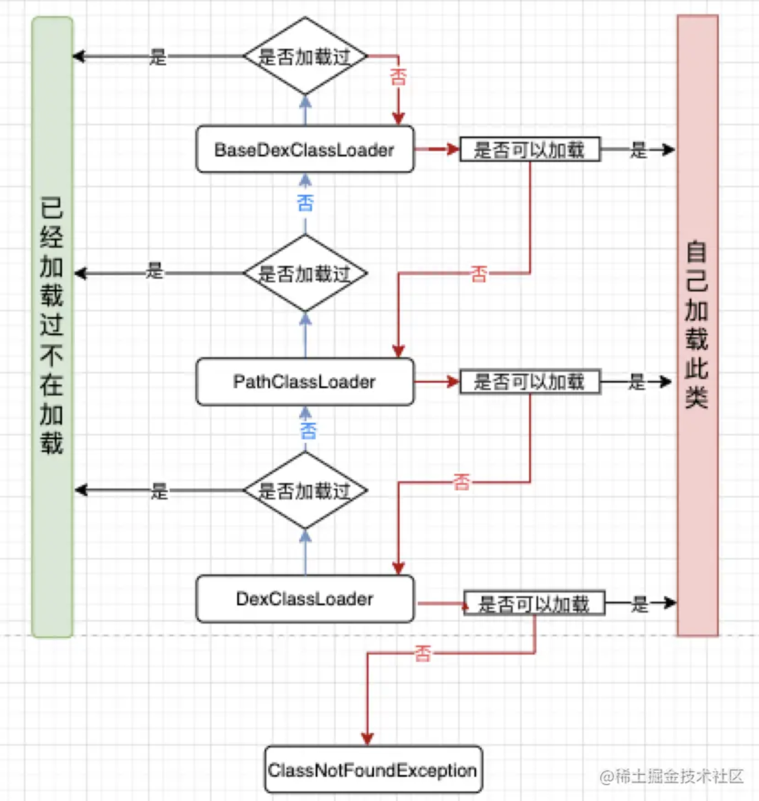

Android插件化
搬运至：https://juejin.cn/post/6973888932572315678#heading-0
一、认识插件化
1.1 插件化起源
插件化技术最初源于免安装运行 Apk的想法，这个免安装的 Apk 就可以理解为插件，而支持插件的 app 我们一般叫 宿主。 想必大家都知道，在 Android 系统中，应用是以 Apk 的形式存在的，应用都需要安装才能使用。但实际上 Android 系统安装应用的方式相当简单，其实就是把应用 Apk 拷贝到系统不同的目录下、然后把 so 解压出来而已。
常见的应用安装目录有：
- /system/app：系统应用
- /system/priv-app：系统应用
- /data/app：用户应用
那可能大家会想问，既然安装这个过程如此简单，Android 是怎么运行应用中的代码的呢，我们先看 Apk 的构成，一个常见的 Apk 会包含如下几个部分：
- classes.dex：Java 代码字节码
- res：资源文件
- lib：so 文件
- assets：静态资产文件
- AndroidManifest.xml：清单文件
其实 Android 系统在打开应用之后，也只是开辟进程，然后使用 ClassLoader 加载 classes.dex 至进程中，执行对应的组件而已。 那大家可能会想一个问题，既然 Android 本身也是使用类似反射的形式加载代码执行，凭什么我们不能执行一个 Apk 中的代码呢？
1.2 插件化优点
插件化让 Apk 中的代码（主要是指 Android 组件）能够免安装运行，这样能够带来很多收益：
减少安装Apk的体积、按需下载模块 动态更新插件 宿主和插件分开编译，提升开发效率 解决方法数超过65535的问题
想象一下，你的应用拥有 Native 应用一般极高的性能，又能获取诸如 Web 应用一样的收益。 嗯，理想很美好不是嘛？
1.3 与组件化的区别
组件化：是将一个App分成多个模块，每个模块都是一个组件（module），开发过程中可以让这些组件相互依赖或独立编译、调试部分组件，但是这些组件最终会合并成一个完整的Apk去发布到应用市场。 插件化：是将整个App拆分成很多模块，每个模块都是一个Apk（组件化的每个模块是一个lib），最终打包的时候将宿主Apk和插件Apk分开打包，只需发布宿主Apk到应用市场，插件Apk通过动态按需下发到宿主Apk。
二、插件化的技术难点
想让插件的Apk真正运行起来，首先要先能找到插件Apk的存放位置，然后我们要能解析加载Apk里面的代码。 但是光能执行Java代码是没有意义的，在Android系统中有四大组件是需要在系统中注册的，具体来说是在 Android 系统的 ActivityManagerService (AMS) 和 PackageManagerService (PMS) 中注册的，而四大组件的解析和启动都需要依赖 AMS 和 PMS，如何欺骗系统，让他承认一个未安装的 Apk 中的组件，如何让宿主动态加载执行插件Apk中 Android 组件（即 Activity、Service、BroadcastReceiver、ContentProvider、Fragment）等是插件化最大的难点。 另外，应用资源引用（特指 R 中引用的资源，如 layout、values 等）也是一大问题，想象一下你在宿主进程中使用反射加载了一个插件 Apk，代码中的 R 对应的 id 却无法引用到正确的资源，会产生什么后果。 总结一下，其实做到插件化的要点就这几个：
- 如何加载并执行插件 Apk 中的代码（ClassLoader Injection）
- 让系统能调用插件 Apk 中的组件（Runtime Container）
- 正确识别插件 Apk 中的资源（Resource Injection）
当然还有其他一些小问题，但可能不是所有场景下都会遇到，我们后面再单独说。
三、ClassLoader Injection
ClassLoader 是插件化中必须要掌握的，因为我们知道Android 应用本身是基于魔改的 Java 虚拟机的，而由于插件是未安装的 apk，系统不会处理其中的类，所以需要使用 ClassLoader 加载 Apk，然后反射里面的代码。
3.1 java 中的 ClassLoader
BootstrapClassLoader 负责加载 JVM 运行时的核心类，比如 JAVA_HOME/lib/rt.jar 等等
ExtensionClassLoader 负责加载 JVM 的扩展类，比如 JAVA_HOME/lib/ext 下面的 jar 包
AppClassLoader 负责加载 classpath 里的 jar 包和目录
3.2 android 中的 ClassLoader
在Android系统中ClassLoader是用来加载dex文件的，有包含 dex 的 apk 文件以及 jar 文件，dex 文件是一种对class文件优化的产物，在Android中应用打包时会把所有class文件进行合并、优化（把不同的class文件重复的东西只保留一份），然后生成一个最终的class.dex文件
PathClassLoader 用来加载系统类和应用程序类，可以加载已经安装的 apk 目录下的 dex 文件
public class PathClassLoader extends BaseDexClassLoader { public PathClassLoader(String dexPath, ClassLoader parent) { super(dexPath, null, null, parent); } public PathClassLoader(String dexPath, String libraryPath, ClassLoader parent) { super(dexPath, null, libraryPath, parent); } }DexClassLoader 用来加载 dex 文件，可以从存储空间加载 dex 文件。
public class DexClassLoader extends BaseDexClassLoader { public DexClassLoader(String dexPath, String optimizedDirectory, String libraryPath, ClassLoader parent) { super(dexPath, new File(optimizedDirectory), libraryPath, parent); } }我们在插件化中一般使用的是 DexClassLoader。
3.3 双亲委派机制
每一个 ClassLoader 中都有一个 parent 对象，代表的是父类加载器，在加载一个类的时候，会先使用父类加载器去加载，如果在父类加载器中没有找到，自己再进行加载，如果 parent 为空，那么就用系统类加载器来加载。通过这样的机制可以保证系统类都是由系统类加载器加载的。 下面是 ClassLoader 的 loadClass 方法的具体实现。
protected Class<?> loadClass(String name, boolean resolve)
throws ClassNotFoundException
{
// First, check if the class has already been loaded
Class<?> c = findLoadedClass(name);
if (c == null) {
try {
if (parent != null) {
// 先从父类加载器中进行加载
c = parent.loadClass(name, false);
} else {
c = findBootstrapClassOrNull(name);
}
} catch (ClassNotFoundException e) {
// ClassNotFoundException thrown if class not found
// from the non-null parent class loader
}
if (c == null) {
// 没有找到，再自己加载
c = findClass(name);
}
}
return c;
}
3.4 如何加载插件中的类
要加载插件中的类，我们首先要创建一个 DexClassLoader，先看下 DexClassLoader 的构造函数需要哪些参数。
public class DexClassLoader extends BaseDexClassLoader {
public DexClassLoader(String dexPath, String optimizedDirectory, String librarySearchPath, ClassLoader parent) {
// ...
}
}
构造函数需要四个参数：
- dexPath 是需要加载的 dex / apk / jar 文件路径
- optimizedDirectory 是 dex 优化后存放的位置，在 ART 上，会执行 oat 对 dex 进行优化，生成机器码，这里就是存放优化后的 odex 文件的位置
- librarySearchPath 是 native 依赖的位置
- parent 就是父类加载器，默认会先从 parent 加载对应的类
创建出 DexClassLaoder 实例以后，只要调用其 loadClass(className) 方法就可以加载插件中的类了。具体的实现在下面：
// 从 assets 中拿出插件 apk 放到内部存储空间
private fun extractPlugin() {
var inputStream = assets.open("plugin.apk")
File(filesDir.absolutePath, "plugin.apk").writeBytes(inputStream.readBytes())
}
private fun init() {
extractPlugin()
pluginPath = File(filesDir.absolutePath, "plugin.apk").absolutePath
nativeLibDir = File(filesDir, "pluginlib").absolutePath
dexOutPath = File(filesDir, "dexout").absolutePath
// 生成 DexClassLoader 用来加载插件类
pluginClassLoader = DexClassLoader(pluginPath, dexOutPath, nativeLibDir, this::class.java.classLoader)
}

3.5 执行插件类的方法
通过反射来执行类的方法
val loadClass = pluginClassLoader.loadClass(activityName)
loadClass.getMethod("test",null).invoke(loadClass)
我们称这个过程叫做 ClassLoader 注入。完成注入后，所有来自宿主的类使用宿主的 ClassLoader 进行加载，所有来自插件 Apk 的类使用插件 ClassLoader 进行加载，而由于 ClassLoader 的双亲委派机制，实际上系统类会不受 ClassLoader 的类隔离机制所影响，这样宿主 Apk 就可以在宿主进程中使用来自于插件的组件类了。
四、Runtime Container
我们之前说到 Activity 插件化最大的难点是如何欺骗系统，让他承认一个未安装的 Apk 中的组件。 因为插件是动态加载的，所以插件的四大组件不可能注册到宿主的 Manifest 文件中，而没有在 Manifest 中注册的四大组件是不能和系统直接进行交互的。 如果直接把插件的 Activity 注册到宿主 Manifest 里就失去了插件化的动态特性，因为每次插件中新增 Activity 都要修改宿主 Manifest 并且重新打包，那就和直接写在宿主中没什么区别了。
4.1 为什么没有注册的 Activity 不能和系统交互
这里的不能直接交互的含义有两个
系统会检测 Activity 是否注册 如果我们启动一个没有在 Manifest 中注册的 Activity，会发现报如下 error：
android.content.ActivityNotFoundException: Unable to find explicit activity class {com.zyg.commontec/com.zyg.plugin.PluginActivity}; have you declared this activity in your AndroidManifest.xml?这个 log 在 Instrumentation 的 checkStartActivityResult 方法中可以看到：
public class Instrumentation { public static void checkStartActivityResult(int res, Object intent) { if (!ActivityManager.isStartResultFatalError(res)) { return; } switch (res) { case ActivityManager.START_INTENT_NOT_RESOLVED: case ActivityManager.START_CLASS_NOT_FOUND: if (intent instanceof Intent && ((Intent)intent).getComponent() != null) throw new ActivityNotFoundException( "Unable to find explicit activity class " + ((Intent)intent).getComponent().toShortString() + "; have you declared this activity in your AndroidManifest.xml?"); throw new ActivityNotFoundException( "No Activity found to handle " + intent); ... } } }Activity 的生命周期无法被调用，其实一个 Activity 主要的工作，都是在其生命周期方法中调用了，既然上一步系统检测了 Manifest 注册文件，启动 Activity 被拒绝，那么其生命周期方法也肯定不会被调用了。从而插件 Activity 也就不能正常运行了。
4.2 运行时容器技术
由于Android中的组件（Activity，Service，BroadcastReceiver和ContentProvider）是由系统创建的，并且由系统管理生命周期。 仅仅构造出这些类的实例是没用的，还需要管理组件的生命周期。其中以Activity最为复杂，不同框架采用的方法也不尽相同。插件化如何支持组件生命周期的管理。 大致分为两种方式：
- 运行时容器技术（ProxyActivity代理）
- 预埋StubActivity，hook系统启动Activity的过程
我们的解决方案很简单，即运行时容器技术，简单来说就是在宿主 Apk 中预埋一些空的 Android 组件，以 Activity 为例，我预置一个 ContainerActivity extends Activity 在宿主中，并且在 AndroidManifest.xml 中注册它。
它要做的事情很简单，就是帮助我们作为插件 Activity 的容器，它从 Intent 接受几个参数，分别是插件的不同信息，如：
- pluginName
- pluginApkPath
- pluginActivityName
等，其实最重要的就是 pluginApkPath 和 pluginActivityName，当 ContainerActivity 启动时，我们就加载插件的 ClassLoader、Resource，并反射 pluginActivityName 对应的 Activity 类。当完成加载后，ContainerActivity 要做两件事：
- 转发所有来自系统的生命周期回调至插件 Activity
- 接受 Activity 方法的系统调用，并转发回系统
我们可以通过复写 ContainerActivity 的生命周期方法来完成第一步，而第二步我们需要定义一个 PluginActivity，然后在编写插件 Apk 中的 Activity 组件时，不再让其集成 android.app.Activity，而是集成自我们的 PluginActivity。
public class ContainerActivity extends Activity {
private PluginActivity pluginActivity;
@Override
protected void onCreate(Bundle savedInstanceState) {
String pluginActivityName = getIntent().getString("pluginActivityName", "");
pluginActivity = PluginLoader.loadActivity(pluginActivityName, this);
if (pluginActivity == null) {
super.onCreate(savedInstanceState);
return;
}
pluginActivity.onCreate();
}
@Override
protected void onResume() {
if (pluginActivity == null) {
super.onResume();
return;
}
pluginActivity.onResume();
}
@Override
protected void onPause() {
if (pluginActivity == null) {
super.onPause();
return;
}
pluginActivity.onPause();
}
// ...
}
public class PluginActivity {
private ContainerActivity containerActivity;
public PluginActivity(ContainerActivity containerActivity) {
this.containerActivity = containerActivity;
}
@Override
public <T extends View> T findViewById(int id) {
return containerActivity.findViewById(id);
}
// ...
}
// 插件 `Apk` 中真正写的组件
public class TestActivity extends PluginActivity {
// ......
}
是不是感觉有点看懂了，虽然真正搞的时候还有很多小坑，但大概原理就是这么简单，启动插件组件需要依赖容器，容器负责加载插件组件并且完成双向转发，转发来自系统的生命周期回调至插件组件，同时转发来自插件组件的系统调用至系统。
4.3 字节码替换
该方式虽然能够很好的实现启动插件Activity的目的，但是由于开发式侵入性很强，插件中的Activity必须继承PluginActivity，如果想把之前的模块改造成插件需要很多额外的工作。
class TestActivity extends Activity {}
->
class TestActivity extends PluginActivity {}
有没有什么办法能让插件组件的编写与原来没有任何差别呢？
Shadow 的做法是字节码替换插件，这是一个非常棒的想法，简单来说，Android 提供了一些 Gradle 插件开发套件，其中有一项功能叫 Transform Api，它可以介入项目的构建过程，在字节码生成后、dex 文件生成前，对代码进行某些变换，具体怎么做的不说了，可以自己看文档。
实现的功能嘛，就是用户配置 Gradle 插件后，正常开发，依然编写：
class TestActivity extends Activity {}
然后完成编译后，最后的字节码中，显示的却是：
class TestActivity extends PluginActivity {}
五、Resource Injection
最后要说的是资源注入，其实这一点相当重要，Android 应用的开发其实崇尚的是逻辑与资源分离的理念，所有资源（layout、values 等）都会被打包到 Apk 中，然后生成一个对应的 R 类，其中包含对所有资源的引用 id。
资源的注入并不容易，好在 Android 系统给我们留了一条后路，最重要的是这两个接口：
- PackageManager#getPackageArchiveInfo：根据 Apk 路径解析一个未安装的 Apk 的 PackageInfo
- PackageManager#getResourcesForApplication：根据 ApplicationInfo 创建一个 Resources 实例
我们要做的就是在上面 ContainerActivity#onCreate 中加载插件 Apk 的时候，用这两个方法创建出来一份插件资源实例。具体来说就是先用 PackageManager#getPackageArchiveInfo 拿到插件 Apk 的 PackageInfo，有了 PacakgeInfo 之后我们就可以自己组装一份 ApplicationInfo，然后通过 PackageManager#getResourcesForApplication 来创建资源实例，大概代码像这样：
PackageManager packageManager = getPackageManager();
PackageInfo packageArchiveInfo = packageManager.getPackageArchiveInfo(
pluginApkPath,
PackageManager.GET_ACTIVITIES
| PackageManager.GET_META_DATA
| PackageManager.GET_SERVICES
| PackageManager.GET_PROVIDERS
| PackageManager.GET_SIGNATURES
);
packageArchiveInfo.applicationInfo.sourceDir = pluginApkPath;
packageArchiveInfo.applicationInfo.publicSourceDir = pluginApkPath;
Resources injectResources = null;
try {
injectResources = packageManager.getResourcesForApplication(packageArchiveInfo.applicationInfo);
} catch (PackageManager.NameNotFoundException e) {
// ...
}
拿到资源实例后，我们需要将宿主的资源和插件资源 Merge 一下，编写一个新的 Resources 类，用这样的方式完成自动代理：
public class PluginResources extends Resources {
private Resources hostResources;
private Resources injectResources;
public PluginResources(Resources hostResources, Resources injectResources) {
super(injectResources.getAssets(), injectResources.getDisplayMetrics(), injectResources.getConfiguration());
this.hostResources = hostResources;
this.injectResources = injectResources;
}
@Override
public String getString(int id, Object... formatArgs) throws NotFoundException {
try {
return injectResources.getString(id, formatArgs);
} catch (NotFoundException e) {
return hostResources.getString(id, formatArgs);
}
}
// ...
}
然后我们在 ContainerActivity 完成插件组件加载后，创建一份 Merge 资源，再复写 ContainerActivity#getResources，将获取到的资源替换掉：
public class ContainerActivity extends Activity {
private Resources pluginResources;
@Override
protected void onCreate(Bundle savedInstanceState) {
// ...
pluginResources = new PluginResources(super.getResources(), PluginLoader.getResources(pluginApkPath));
// ...
}
@Override
public Resources getResources() {
if (pluginActivity == null) {
return super.getResources();
}
return pluginResources;
}
}
这样就完成了资源的注入。